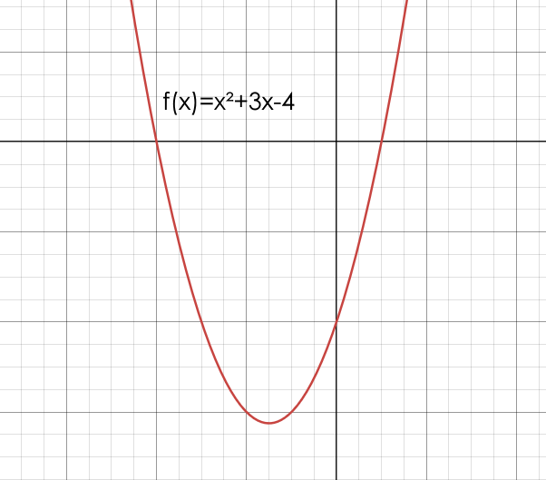
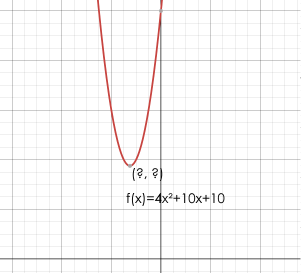

1.
2.
3.
4.
5.


1. x = 2 & x = -9
2. x = 9 & x = 8
3. x = 16 & x = -4
4. x = -6 & x = -15/2
5. x = 4 & x = -6
Vertex (1pt): (-3/2, -25/4)
x-intercepts (2pts): (-4, 0), (1,0)
y-intercept (1pt): (0, -4)
Axis of Symmetry (1pt): x = -3/2
h = -(10/2(4)) = -10/8 = -5/4
k = 4(-5/4)^2 + 10(-5/4) + 10
k = 25/4 - 50/4 + 10
k = -25/4 + 40/4
k = 15/4
Final Coordinates: (-5/4, 15/4)
©2024 by Christian Robert L. Daquipil